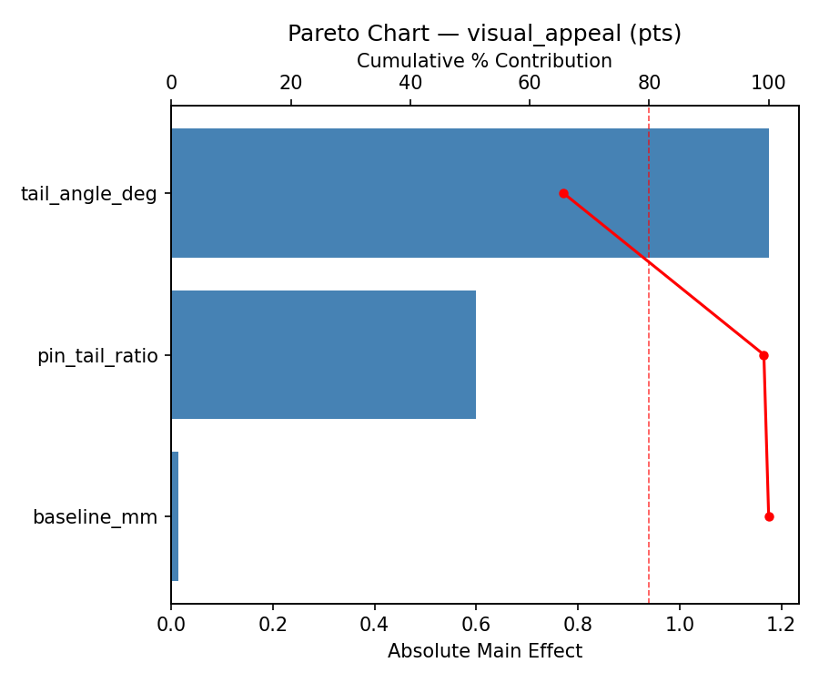
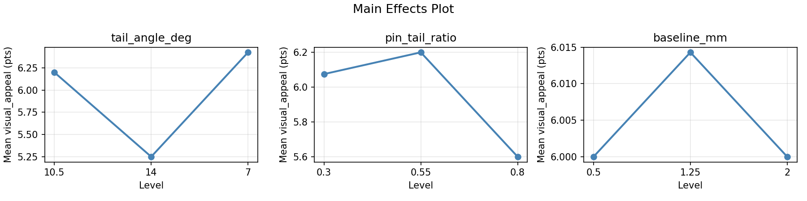
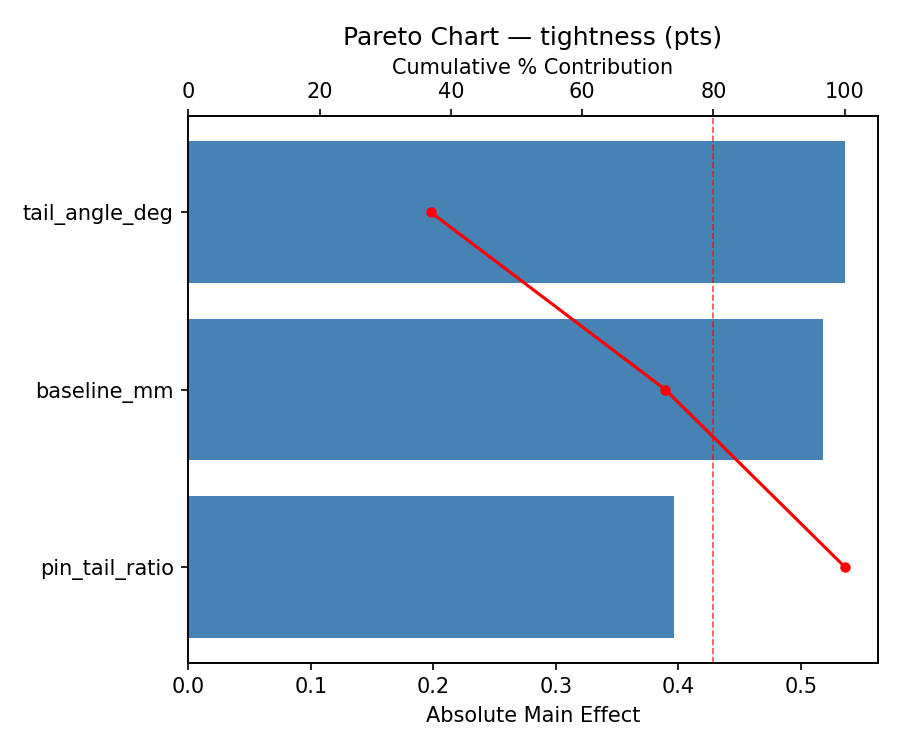
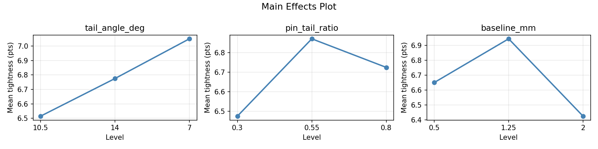
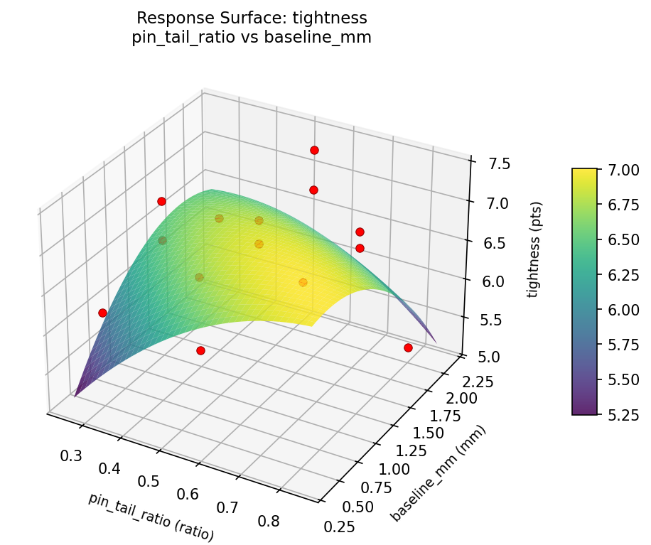
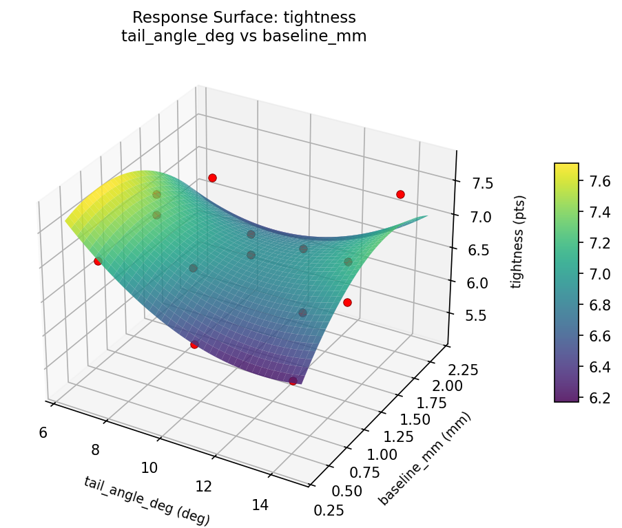
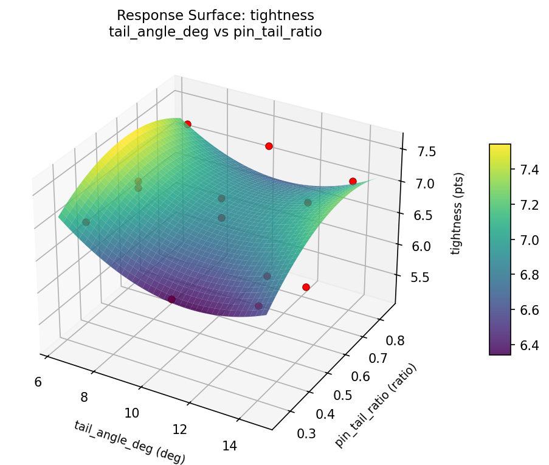
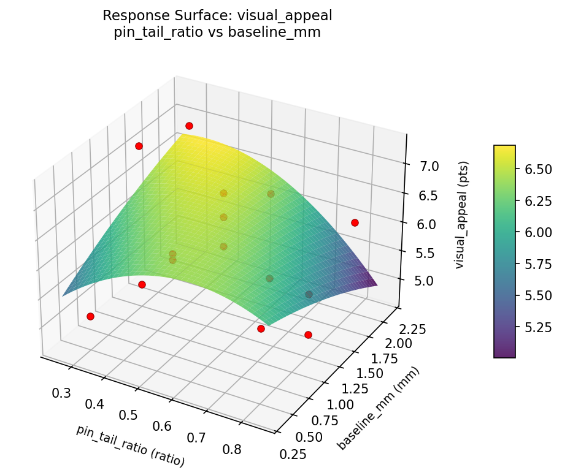
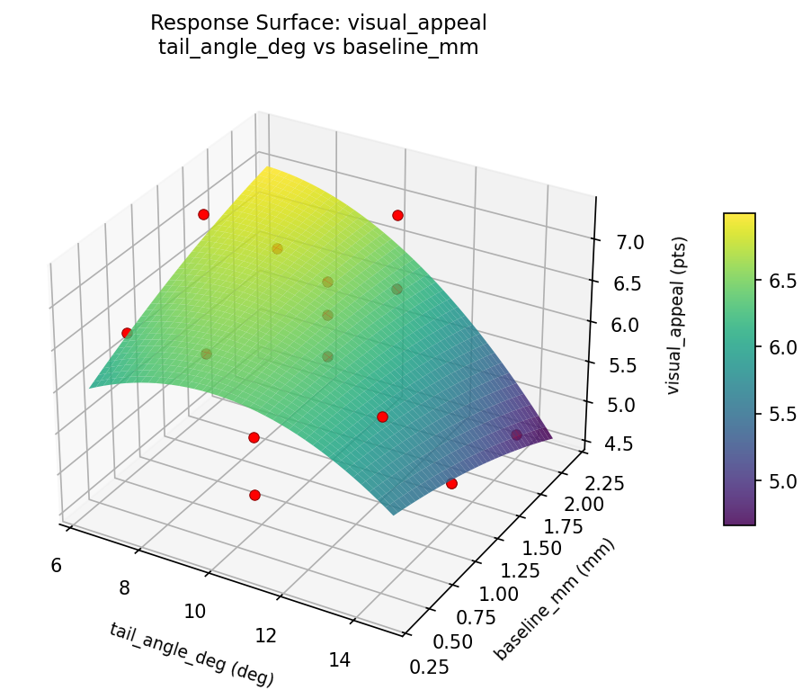
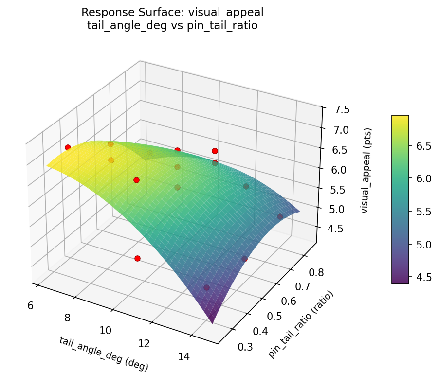

Summary
This experiment investigates dovetail joint aesthetics. Box-Behnken design to maximize visual appeal and joint tightness by tuning tail angle, pin-to-tail ratio, and baseline offset.
The design varies 3 factors: tail angle deg (deg), ranging from 7 to 14, pin tail ratio (ratio), ranging from 0.3 to 0.8, and baseline mm (mm), ranging from 0.5 to 2.0. The goal is to optimize 2 responses: visual appeal (pts) (maximize) and tightness (pts) (maximize). Fixed conditions held constant across all runs include wood = cherry, board thickness = 19mm.
A Box-Behnken design was chosen because it efficiently fits quadratic models with 3 continuous factors while avoiding extreme corner combinations — requiring only 15 runs instead of the 8 needed for a full factorial at two levels.
Quadratic response surface models were fitted to capture potential curvature and factor interactions. The RSM contour plots below visualize how pairs of factors jointly affect each response.
Key Findings
For visual appeal, the most influential factors were tail angle deg (65.7%), pin tail ratio (33.5%), baseline mm (0.8%). The best observed value was 7.3 (at tail angle deg = 7, pin tail ratio = 0.55, baseline mm = 0.5).
For tightness, the most influential factors were tail angle deg (36.9%), baseline mm (35.7%), pin tail ratio (27.3%). The best observed value was 7.4 (at tail angle deg = 10.5, pin tail ratio = 0.55, baseline mm = 1.25).
Recommended Next Steps
- Run confirmation experiments at the predicted optimal settings to validate the model.
- Consider whether any fixed factors should be varied in a future study.
Experimental Setup
Factors
| Factor | Low | High | Unit |
|---|
tail_angle_deg | 7 | 14 | deg |
pin_tail_ratio | 0.3 | 0.8 | ratio |
baseline_mm | 0.5 | 2.0 | mm |
Fixed: wood = cherry, board_thickness = 19mm
Responses
| Response | Direction | Unit |
|---|
visual_appeal | ↑ maximize | pts |
tightness | ↑ maximize | pts |
Configuration
{
"metadata": {
"name": "Dovetail Joint Aesthetics",
"description": "Box-Behnken design to maximize visual appeal and joint tightness by tuning tail angle, pin-to-tail ratio, and baseline offset"
},
"factors": [
{
"name": "tail_angle_deg",
"levels": [
"7",
"14"
],
"type": "continuous",
"unit": "deg"
},
{
"name": "pin_tail_ratio",
"levels": [
"0.3",
"0.8"
],
"type": "continuous",
"unit": "ratio"
},
{
"name": "baseline_mm",
"levels": [
"0.5",
"2.0"
],
"type": "continuous",
"unit": "mm"
}
],
"fixed_factors": {
"wood": "cherry",
"board_thickness": "19mm"
},
"responses": [
{
"name": "visual_appeal",
"optimize": "maximize",
"unit": "pts"
},
{
"name": "tightness",
"optimize": "maximize",
"unit": "pts"
}
],
"settings": {
"operation": "box_behnken",
"test_script": "use_cases/206_dovetail_joint/sim.sh"
}
}
Experimental Matrix
The Box-Behnken Design produces 15 runs. Each row is one experiment with specific factor settings.
| Run | tail_angle_deg | pin_tail_ratio | baseline_mm |
|---|
| 1 | 10.5 | 0.3 | 0.5 |
| 2 | 10.5 | 0.55 | 1.25 |
| 3 | 14 | 0.55 | 2 |
| 4 | 14 | 0.55 | 0.5 |
| 5 | 10.5 | 0.55 | 1.25 |
| 6 | 10.5 | 0.55 | 1.25 |
| 7 | 7 | 0.55 | 2 |
| 8 | 14 | 0.3 | 1.25 |
| 9 | 10.5 | 0.3 | 2 |
| 10 | 14 | 0.8 | 1.25 |
| 11 | 7 | 0.55 | 0.5 |
| 12 | 10.5 | 0.8 | 2 |
| 13 | 7 | 0.3 | 1.25 |
| 14 | 7 | 0.8 | 1.25 |
| 15 | 10.5 | 0.8 | 0.5 |
Step-by-Step Workflow
1
Preview the design
$ python doe.py info --config use_cases/206_dovetail_joint/config.json
2
Generate the runner script
$ python doe.py generate --config use_cases/206_dovetail_joint/config.json \
--output use_cases/206_dovetail_joint/results/run.sh --seed 42
3
Execute the experiments
$ bash use_cases/206_dovetail_joint/results/run.sh
4
Analyze results
$ python doe.py analyze --config use_cases/206_dovetail_joint/config.json
5
Get optimization recommendations
$ python doe.py optimize --config use_cases/206_dovetail_joint/config.json
6
Generate the HTML report
$ python doe.py report --config use_cases/206_dovetail_joint/config.json \
--output use_cases/206_dovetail_joint/results/report.html
Real-World Experiment Workflow
ℹ
Physical Woodworking Test? Use the Manual Workflow
Woodworking experiments involve real wood, tools, and craftsmanship. Joint strength, surface quality, and finish must be physically tested. The simulation script above is for demonstration. For your real experiments, use record, status, and export-worksheet.
$ python doe.py export-worksheet --config use_cases/206_dovetail_joint/config.json \
--format csv --output worksheet.csv
$ python doe.py status --config use_cases/206_dovetail_joint/config.json
$ python doe.py record --config use_cases/206_dovetail_joint/config.json --run 1
$ python doe.py analyze --config use_cases/206_dovetail_joint/config.json --partial
$ python doe.py analyze --config use_cases/206_dovetail_joint/config.json
$ python doe.py optimize --config use_cases/206_dovetail_joint/config.json
$ python doe.py report --config use_cases/206_dovetail_joint/config.json \
--output report.html
✔
Works Without a Test Script
The analysis pipeline doesn't care how results were produced. Record your measurements with record, and the full analysis, optimization, and reporting pipeline works identically. Use --partial to get early insights before all runs are complete.
Features Exercised
| Feature | Value |
|---|
| Design type | box_behnken |
| Factor types | continuous (all 3) |
| Arg style | double-dash |
| Responses | 2 (visual_appeal ↑, tightness ↑) |
| Total runs | 15 |
Analysis Results
Generated from actual experiment runs using the DOE Helper Tool.
Response: visual_appeal
Top factors: tail_angle_deg (65.7%), pin_tail_ratio (33.5%), baseline_mm (0.8%).
Pareto Chart

Main Effects Plot

Response: tightness
Top factors: tail_angle_deg (36.9%), baseline_mm (35.7%), pin_tail_ratio (27.3%).
Pareto Chart

Main Effects Plot

Response Surface Plots
3D surfaces fitted with quadratic RSM. Red dots are observed data points.
tightness pin tail ratio vs baseline mm

tightness tail angle deg vs baseline mm

tightness tail angle deg vs pin tail ratio

visual appeal pin tail ratio vs baseline mm

visual appeal tail angle deg vs baseline mm

visual appeal tail angle deg vs pin tail ratio

Full Analysis Output
RSM surface: rsm_visual_appeal_tail_angle_deg_vs_pin_tail_ratio.png
RSM surface: rsm_visual_appeal_tail_angle_deg_vs_baseline_mm.png
RSM surface: rsm_visual_appeal_pin_tail_ratio_vs_baseline_mm.png
RSM surface: rsm_tightness_tail_angle_deg_vs_pin_tail_ratio.png
RSM surface: rsm_tightness_tail_angle_deg_vs_baseline_mm.png
RSM surface: rsm_tightness_pin_tail_ratio_vs_baseline_mm.png
=== Main Effects: visual_appeal ===
Factor Effect Std Error % Contribution
--------------------------------------------------------------
tail_angle_deg 1.1750 0.2130 65.7%
pin_tail_ratio 0.6000 0.2130 33.5%
baseline_mm 0.0143 0.2130 0.8%
=== Summary Statistics: visual_appeal ===
tail_angle_deg:
Level N Mean Std Min Max
------------------------------------------------------------
10.5 7 6.2000 0.6633 5.1000 7.0000
14 4 5.2500 0.8386 4.7000 6.5000
7 4 6.4250 0.7136 5.6000 7.3000
pin_tail_ratio:
Level N Mean Std Min Max
------------------------------------------------------------
0.3 4 6.0750 1.2500 4.9000 7.3000
0.55 7 6.2000 0.7211 4.7000 6.9000
0.8 4 5.6000 0.5099 4.9000 6.1000
baseline_mm:
Level N Mean Std Min Max
------------------------------------------------------------
0.5 4 6.0000 0.6976 5.1000 6.6000
1.25 7 6.0143 0.9424 4.9000 7.3000
2 4 6.0000 0.9557 4.7000 7.0000
=== Main Effects: tightness ===
Factor Effect Std Error % Contribution
--------------------------------------------------------------
tail_angle_deg 0.5357 0.1529 36.9%
baseline_mm 0.5179 0.1529 35.7%
pin_tail_ratio 0.3964 0.1529 27.3%
=== Summary Statistics: tightness ===
tail_angle_deg:
Level N Mean Std Min Max
------------------------------------------------------------
10.5 7 6.5143 0.7128 5.2000 7.3000
14 4 6.7750 0.5852 6.1000 7.4000
7 4 7.0500 0.1732 6.9000 7.3000
pin_tail_ratio:
Level N Mean Std Min Max
------------------------------------------------------------
0.3 4 6.4750 0.3775 6.2000 7.0000
0.55 7 6.8714 0.3988 6.1000 7.4000
0.8 4 6.7250 1.0210 5.2000 7.3000
baseline_mm:
Level N Mean Std Min Max
------------------------------------------------------------
0.5 4 6.6500 0.5916 6.1000 7.3000
1.25 7 6.9429 0.2637 6.5000 7.3000
2 4 6.4250 0.9535 5.2000 7.4000
Pareto chart (visual_appeal): use_cases/206_dovetail_joint/results/analysis/pareto_visual_appeal.png
Pareto chart (tightness): use_cases/206_dovetail_joint/results/analysis/pareto_tightness.png
Main effects (visual_appeal): use_cases/206_dovetail_joint/results/analysis/main_effects_visual_appeal.png
Main effects (tightness): use_cases/206_dovetail_joint/results/analysis/main_effects_tightness.png
Optimization Recommendations
=== Optimization: visual_appeal ===
Direction: maximize
Best observed run: #12
tail_angle_deg = 7
pin_tail_ratio = 0.55
baseline_mm = 0.5
Value: 7.3
RSM Model (linear, R² = 0.1299, Adj R² = -0.1074):
Coefficients:
intercept +6.0067
tail_angle_deg -0.3125
pin_tail_ratio -0.2375
baseline_mm +0.0250
RSM Model (quadratic, R² = 0.3486, Adj R² = -0.8239):
Coefficients:
intercept +5.8000
tail_angle_deg -0.3125
pin_tail_ratio -0.2375
baseline_mm +0.0250
tail_angle_deg*pin_tail_ratio -0.5750
tail_angle_deg*baseline_mm +0.1500
pin_tail_ratio*baseline_mm +0.3000
tail_angle_deg^2 -0.0125
pin_tail_ratio^2 +0.1375
baseline_mm^2 +0.2625
Curvature analysis:
baseline_mm coef=+0.2625 convex (has a minimum)
pin_tail_ratio coef=+0.1375 convex (has a minimum)
tail_angle_deg coef=-0.0125 negligible curvature
Notable interactions:
tail_angle_deg*pin_tail_ratio coef=-0.5750 (antagonistic)
Predicted optimum (from linear model):
tail_angle_deg = 7
pin_tail_ratio = 0.3
baseline_mm = 1.25
Predicted value: 6.5567
Model quality: Weak fit — consider adding center points or using a different design.
Factor importance:
1. tail_angle_deg (effect: 0.6, contribution: 45.3%)
2. pin_tail_ratio (effect: 0.5, contribution: 34.5%)
3. baseline_mm (effect: 0.3, contribution: 20.2%)
=== Optimization: tightness ===
Direction: maximize
Best observed run: #13
tail_angle_deg = 10.5
pin_tail_ratio = 0.55
baseline_mm = 1.25
Value: 7.4
RSM Model (linear, R² = 0.2205, Adj R² = 0.0079):
Coefficients:
intercept +6.7267
tail_angle_deg -0.1625
pin_tail_ratio -0.2625
baseline_mm -0.2000
RSM Model (quadratic, R² = 0.3728, Adj R² = -0.7562):
Coefficients:
intercept +6.5333
tail_angle_deg -0.1625
pin_tail_ratio -0.2625
baseline_mm -0.2000
tail_angle_deg*pin_tail_ratio +0.2250
tail_angle_deg*baseline_mm -0.2500
pin_tail_ratio*baseline_mm -0.1500
tail_angle_deg^2 +0.0958
pin_tail_ratio^2 +0.0458
baseline_mm^2 +0.2208
Curvature analysis:
baseline_mm coef=+0.2208 convex (has a minimum)
tail_angle_deg coef=+0.0958 negligible curvature
pin_tail_ratio coef=+0.0458 negligible curvature
Predicted optimum (from linear model):
tail_angle_deg = 10.5
pin_tail_ratio = 0.3
baseline_mm = 0.5
Predicted value: 7.1892
Model quality: Weak fit — consider adding center points or using a different design.
Factor importance:
1. pin_tail_ratio (effect: 0.5, contribution: 41.6%)
2. baseline_mm (effect: 0.4, contribution: 32.6%)
3. tail_angle_deg (effect: 0.3, contribution: 25.8%)